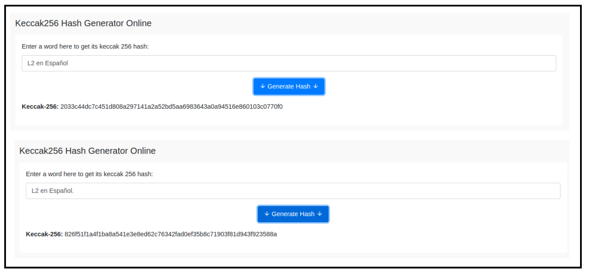
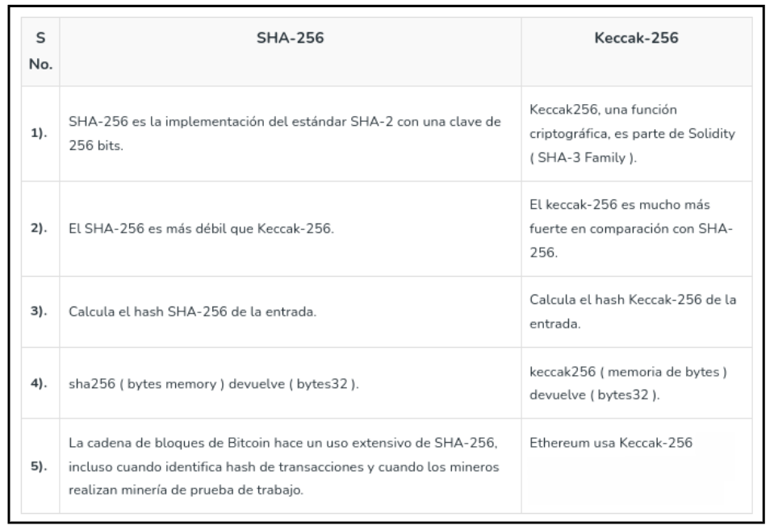
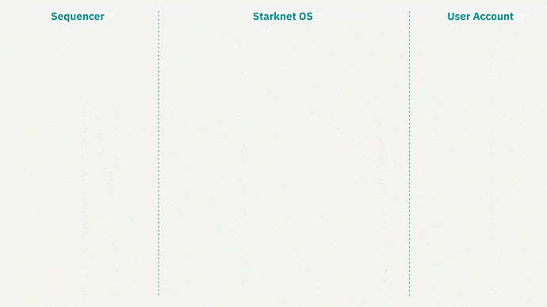
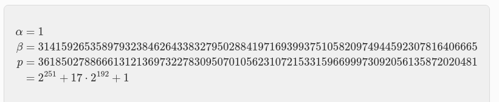
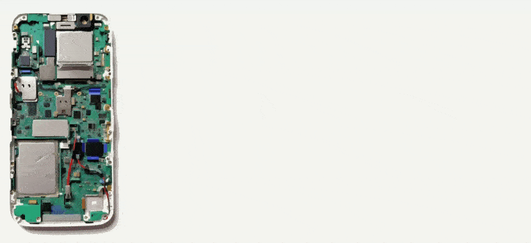
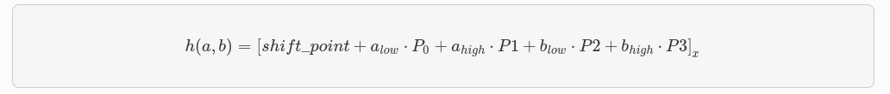

Introducción
¡Hola comunidad! 👋
Antes que nada nos gustaría expresar nuestro más sincero agradecimiento a todos aquellos que han contribuido y hecho posible la realización de esta exhaustiva investigación y documento sobre criptografía y como se adaptan en StarkWare. Especial reconocimiento a los expertos @X, @Y, @Z y @A, quienes han brindado sus valiosas correcciones y orientación en numerosos aspectos del trabajo. Su experiencia y conocimientos han sido fundamentales para alcanzar los resultados y conclusiones presentados en este informe.
En esta ocasión, estamos emocionados de presentar una serie de artículos profundos sobre el desarrollo detrás de Starkware. Recomendamos a los lectores que previamente hayan leído otros documentos y tengan conocimientos técnicos para una mejor comprensión, para este documento en concreto recomendamos:
Stark END-Game | Recursive Stark | Account Abstraction | Intro Maths Starks
El panorama actual es complejo, pero nos enorgullece contar con las mentes más brillantes trabajando en el ecosistema, una STARK que los une a todos.
¿Eres o serás uno de ellos? Antes de sumergirnos, exploraremos una serie de conceptos para establecer bases e historias sobre criptografía, lo que nos permitirá adentrarnos aún más en el ecosistema STARKs. ¡Comencemos!
Bases Criptográficas
La criptografía es el campo de estudio y desarrollo de técnicas y algoritmos para asegurar la confidencialidad, integridad y autenticidad de la información. Utilizando claves secretas o públicas, la criptografía transforma los datos en un formato incomprensible para terceros no autorizados, garantizando que solo los destinatarios legítimos puedan acceder a la información original. La criptografía desempeña un papel vital en la seguridad de las comunicaciones y el almacenamiento de datos, protegiendo la privacidad y la confianza en diversos ámbitos de la vida moderna.
-
Encryption: el cifrado es el proceso de convertir información legible en un formato ilegible llamado texto cifrado, mediante el uso de algoritmos y una clave. El objetivo principal del cifrado es proteger la confidencialidad de los datos, asegurando que solo las personas autorizadas puedan acceder y comprender la información cifrada. Para ello, se aplica una serie de transformaciones matemáticas al texto original, lo que dificulta su interpretación sin la clave correspondiente.
-
Cryptographic protocol: un protocolo criptográfico o protocolo de seguridad (también llamado protocolo de cifrado) es un protocolo abstracto o concreto que realiza funciones relacionadas con la seguridad, aplicando métodos criptográficos. Un protocolo describe la forma en que un algoritmo debe usarse.
-
Algorithm: un algoritmo de cifrado es un procedimiento que convierte un mensaje de texto plano en un texto cifrado. Los algoritmos modernos utilizan matemáticas avanzadas y una o varias claves de cifrado. Esto hace que sea relativamente fácil cifrar un mensaje, pero prácticamente imposible descifrarlo sin conocer las claves requeridas.
Esquema de cifrado
Estos esquemas definen cómo se realiza la transformación de los datos originales en texto cifrado y cómo se realiza la operación inversa para recuperar los datos originales a partir del texto cifrado. Un esquema de cifrado generalmente consta de los siguientes elementos:
-
Encryption Algorithm: vimos que es el conjunto de operaciones matemáticas utilizadas para cifrar los datos en texto cifrado.
-
Decryption Algorithm: es el conjunto de operaciones matemáticas inversas utilizadas para descifrar el texto cifrado y recuperar los datos originales.
-
Key: conocida como clave, es un valor secreto que se utiliza como entrada para el algoritmo de cifrado. La key determina cómo se realiza la transformación de los datos y es esencial para descifrar el texto cifrado.
-
Protocols: establecen cómo se utiliza el esquema de cifrado, incluyendo la generación y distribución segura de claves, el manejo de errores y la gestión de la seguridad.
Existen varios tipos de esquemas de cifrado:
-
El cifrado simétrico (donde se utiliza una sola clave tanto para cifrar como para descifrar),
-
El cifrado asimétrico o de clave pública (donde se utilizan pares de claves pública y privada)
-
Otras variantes de esquemas de cifrados como de flujo y de bloque. Cada esquema tiene sus propias características y se utiliza en diferentes contextos según los requisitos de seguridad y las necesidades específicas de la aplicación, pero nos centraremos en las principales para entender su funcionamiento antes de pasar a la evolución de las STARKs.
Criptografía Simétrica
La historia de la criptografía simétrica se remonta a tiempos antiguos, pero su uso moderno se consolidó en el siglo XX con el desarrollo de métodos más sofisticados. Un ejemplo icónico es la máquina Enigma, utilizada por los alemanes durante la Segunda Guerra Mundial para cifrar y descifrar mensajes, esta máquina demostró la eficacia de la criptografía simétrica en entornos militares.
Podemos ver la criptografía simétrica como una antigua y confiable llave maestra en el mundo de la seguridad informática. Es una técnica que ha sido utilizada desde hace mucho tiempo y aún en la actualidad sigue siendo efectiva y segura para proteger información en diversas situaciones.
Imagínate una llave que puede tanto cerrar como abrir una puerta. Los algoritmos criptográficos de clave simétrica funcionan de manera similar, utilizan la misma clave para cifrar el texto original y descifrar el texto cifrado, esta clave compartida es como el secreto que solo tú y los destinatarios autorizados conocen.

Sin embargo, a medida que la tecnología avanzaba y las capacidades de cómputo aumentaban, se hizo evidente que era necesario fortalecer los sistemas de cifrado. Surgieron nuevos desafíos y amenazas que requerían niveles más altos de seguridad. Es por eso que se desarrollaron otros métodos criptográficos, como la criptografía asimétrica, que utiliza pares de claves diferentes para el cifrado y el descifrado.
Aunque la criptografía simétrica ha evolucionado con el tiempo, todavía se utiliza ampliamente en muchos sistemas y aplicaciones. Su simplicidad y eficiencia la convierten en una opción popular para proteger datos en redes privadas, sistemas de comunicación y almacenamiento de información sensible.
Criptografía Asimétrica
Ahora hablemos como el concepto de algoritmos criptográficos de clave asimétrica, fue un enfoque revolucionario que introdujo un concepto completamente diferente, el uso de un par de claves complementarias, una pública y una privada, para asegurar la confidencialidad de los datos. Cada clave del par tenía una función específica:
- Public key: esta clave pública se compartía abiertamente y se utilizaba para cifrar la información.
- Private key: esta clave privada se guardaba cuidadosamente y se utilizaba para descifrarla.
Con la criptografía de clave pública, los mensajes cifrados podían ser transmitidos a través de redes inseguras sin el temor de que fueran interceptados y descifrados por personas no autorizadas, pero en este caso diferenciándose de la simétrica en que estos mensajes requerían un Private key y una Public key. Era como si se hubiera descubierto una nueva forma de comunicación secreta y segura en el mundo digital, fue un avance revolucionario en el campo de la criptografía.
Algunos de los más destacados y utilizados son los siguiente:
-
RSA - Rivest-Shamir-Adleman: es un sistema criptográfico asimétrico de clave pública desarrollado en 1979. Su seguridad radica en el problema de la factorización de números enteros y se utiliza en diversos ámbitos de la transmisión de datos en Internet debido a su facilidad de uso. Este sistema consta de una clave pública RSA y una clave privada RSA.
-
ECC - Elliptic Curve Cryptography: en la década de 1980 se desarrolló este enfoque de curva elíptica criptográfica, una variante de la criptografía asimétrica o de clave pública basada en las matemáticas de las curvas elípticas que proporciona niveles de seguridad similares o superiores a RSA pero con claves más cortas.
-
ECDSA - Elliptic Curve Digital Signature Algorithm: en los Años 1990 nació ECDSA, un algoritmo de firma digital y autenticación en criptografía asimétrica, basado en curvas elípticas. Se utiliza en criptografía para garantizar la autenticidad, integridad de los datos. ECDSA se basa en la dificultad computacional de resolver el problema del logaritmo discreto en curvas elípticas.
Criptografía Híbrida
El cifrado híbrido utiliza las propiedades únicas de la criptografía de clave pública para intercambiar información secreta a través de un canal no confiable, combinando la eficacia del cifrado simétrico. Esto proporciona una solución práctica de extremo a extremo para garantizar la privacidad de los datos.
Aunque los algoritmos de clave pública, como RSA-OAEP, son menos eficientes que los algoritmos simétricos, generalmente no se utilizan directamente para cifrar los datos. Sin embargo, desempeñan un papel importante en el ecosistema criptográfico al permitir el intercambio seguro de claves.
Para utilizar el cifrado simétrico, las partes deben compartir una clave. Si ya existe un canal seguro, se puede enviar la clave a través de él. Sin embargo, si no hay un canal seguro disponible, se resuelve el problema del intercambio de claves utilizando la criptografía de clave pública.
- DH - Diffie–Hellman: el intercambio de claves DH es un algoritmo criptográfico de clave pública diseñado específicamente para acordar una clave simétrica en ausencia de un canal seguro. La combinación de criptografía de clave pública para el intercambio de claves y el cifrado simétrico para el cifrado de datos en masa se conoce como cifrado híbrido.
El cifrado híbrido se utiliza ampliamente en los protocolos de transferencia de datos para la web, como en la capa de seguridad de transporte (TLS). Cuando te conectas a un sitio web que utiliza HTTPS (HTTP seguro con TLS), tu navegador negocia los algoritmos criptográficos que aseguran la conexión. Estos algoritmos incluyen métodos para el intercambio de claves, cifrado simétrico y firmas digitales.
Firmas digitales
Los esquemas de firma digital son un tipo de criptografía de clave pública que garantiza la integridad, autenticidad y no repudio de los datos.
Es importante destacar que el esquema de firma digital puede variar dependiendo del algoritmo utilizado, ECDSA, es un ejemplo común de esquema de firma basado en criptografía de curva elíptica. Aquí EC recordemos que representa la curva elíptica utilizada y DSA (una variante de los esquemas de firma Schnorr y ElGamal) el algoritmo de firma digital. Cada esquema tiene sus propias características y propiedades de seguridad, y se selecciona según los requisitos y consideraciones específicas de la aplicación.
Cuando se trata de firmas digitales, los pasos generales suelen ser los siguientes:
-
Key generation: el Generador de Claves es un protocolo o algoritmo que genera un Keypar, un par de claves asimétricas como se explicó anteriormente compuestas por una public key y una private key. En el caso de la criptografía de curva elíptica (como ECDSA), se generan los parámetros necesarios para definir la curva y se elige una clave privada aleatoria. A partir de la clave privada, se calcula la clave pública correspondiente utilizando operaciones matemáticas específicas.
-
Hash del mensaje: antes de firmar el mensaje, se aplica una función hash criptográfica al contenido del mensaje. Esto reduce el mensaje a un valor de longitud fija llamado resumen o hash. El objetivo es garantizar la integridad y eficiencia del proceso de firma, ya que es más rápido firmar y verificar un resumen más corto que el mensaje completo.
-
Digital Signature: este proceso tiene el propósito de realizar una serie de operaciones matemáticas utilizando la clave privada y el hash del mensaje para generar la firma digital.
-
Verify Signature: para verificar la autenticidad de la firma, se necesita la clave pública del firmante. Se aplica nuevamente la función hash al mensaje original y se utiliza la clave pública junto con la firma para realizar operaciones matemáticas específicas. Si el resultado coincide con la firma original, se considera que la firma es válida y se confirma la autenticidad del mensaje y del firmante.
El proceso de firma puede considerarse como el cifrado del archivo mediante la clave privada. Para ello, la persona que firma utiliza su clave privada para producir una firma.
Exploraremos a continuación la relevancia de los diversos esquemas de firmas para garantizar la seguridad de nuestros datos, así como la forma en que Starknet usa AA para abstraer la firma de la validación. En este contexto, se pueden diseñar diferentes esquemas o configuraciones, como el secp256r1, una variante de STARK Curve, la versión amigable de ECDSA optimizada en Starknet. Este esquema de firma se puede utilizar para incorporar firmas en dispositivos modernos de manera biométrica, aislada y abstraída por naturaleza, lo que mejora significativamente la eficiencia, tal como se discutirá en detalle más adelante.
Por lo tanto, resulta crucial abordar el siguiente apartado relacionado con el uso de Key generation que desempeñan un papel fundamental en este contexto.
Key generator
Tenemos que entender cómo el generador de claves (Key generator) genera el Keypair, para lograrlo, es necesario trabajar con valores pseudoaleatorios que se utilizan en la generación de la private key. Un Key generator se puede implementar en un sistema con el propósito de generar y autenticar claves.
Key generator puede implementarse en cualquier sistema criptográfico que utilice la curva elíptica, como es el caso de secp256k1 (una curva optimizada basada en las propiedades matemáticas de las curvas elípticas para proporcionar un esquema de firma digital seguro y eficiente), como Bitcoin y Ethereum.
Este generador de claves garantiza que, con alta probabilidad, las claves privadas generadas sean únicas y seguras, lo que a su vez respalda la integridad y autenticidad de las transacciones realizadas en la red.
Generadores de números pseudoaleatorios
Para garantizar la seguridad usando la pseudoaleatoriedad estadística de un PRNG - Pseudorandom number generator, es crucial contar con una semilla inicial. Si la semilla es fácilmente predecible, generará valores predecibles de números y todo el proceso será inseguro.
Para lograr una inicialización segura del generador pseudoaleatorio, es necesario recolectar Entropía, que representa la aleatoriedad necesaria en el proceso.
Entropía
La entropía o aleatoriedad impredecible en computación, generalmente se mide en bits. Tenemos varios ejemplos para entender el concepto y grado de aleatoriedad. Si mueve el mouse de su computadora, generará algunos eventos difíciles de predecir, como la ubicación de inicio y la ubicación final del cursor del mouse.
Si suponemos que el mouse ha cambiado su posición en el rango de
[ 0 ... 255 píxeles ], la entropía recolectada de este movimiento del mouse debe ser de aproximadamente 8 bits, porque2⁸ = 255
Si se le pide al usuario que piense en un número en el rango
[ 0 ... 1000 ], este número tendrá alrededor de 9-10 bits de entropía porque,2¹⁰ = 1024
Para recolectar 256 bits de entropía, es decir, para generar de forma segura un número entero de 256 bits, deberá tener en cuenta una secuencia de varios eventos similares (como movimientos del mouse e interracidades del teclado del usuario).
Aquí la importancia de dónde y cómo hemos generado nuestras claves privadas y públicas y las posibles vulnerabilidades en algunos malos usos.
Funciones hash y funciones hash criptográficas
Este apartado es de suma importancia para comprender el funcionamiento de las funciones hash. A diferencia de los esquemas de cifrado o las firmas, las funciones hash no requieren de una clave. Cualquier persona puede calcular el hash de una entrada determinada, y la función hash siempre producirá la misma salida para la misma entrada.
Así que podemos definir una función hash como un algoritmo que toma una entrada, como un mensaje o un archivo, y produce una salida de longitud fija llamada hash o resumen. Esta salida es única para cada entrada específica, lo que permite la verificación de la integridad de los datos y garantiza que cualquier cambio en la entrada resultará en un hash completamente diferente.
Una función hash criptográfica, por otro lado, es aquella función hash que se utiliza en el ámbito de la criptografía, para evaluar la seguridad de una función de hash criptográfica, se consideran las siguientes propiedades:
- Resistencia a la preimagen: partiendo de un valor
hash h, es difícil encontrar un mensajemque genere esehash, es decir,h = hash(m), este concepto está relacionado con el de una función de sentido único. Las funciones que carecen de esta propiedad son vulnerables a ataques de preimagen. - Resistencia a la segunda preimagen: dado un mensaje
m₁, es difícil encontrar otro mensajem₂distinto am₁que produzca el mismo valor de hash, es decir,hash(m₁) = hash(m₂). Esta propiedad también se conoce como resistencia débil a colisiones. Las funciones que no cumplen esta propiedad son vulnerables a ataques de segunda preimagen. - Resistencia a colisiones: es difícil encontrar dos mensajes diferentes
m₁ym₂que produzcan el mismo valor de hash, es decir,hash(m₁) = hash(m₂). Estas colisiones son conocidas como colisiones criptográficas de hash. Esta propiedad también se conoce como resistencia fuerte a colisiones. Se requiere que el tamaño del hash sea al menos el doble de largo para garantizar la resistencia a la preimagen.
Merkle Tree en Blockchain
Ahora que hemos comprendido mejor qué es un hash, veamos cómo en criptografía y ciencias de la computación, un árbol hash, también conocido cómo Merkle Tree o binary Merkle tree, es una estructura de datos utilizada para garantizar la integridad de los contenidos almacenados en un sistema, como la tecnología blockchain.
Podemos ver los Merkle Trees como una estructura de árbol en la que cada "hoja" o nodo terminal, está etiquetado con el hash criptográfico de un bloque de datos. A su vez, cada nodo que no es una hoja, también conocido como rama, nodo interior o inodo, está etiquetado con el hash criptográfico de las etiquetas de sus nodos secundarios.
La construcción de un Merkle Tree implica dividir los datos en bloques más pequeños y aplicar una función de hash criptográfico a cada uno de ellos. Luego, los bloques hash se combinan en pares y se vuelven a hashear, repitiendo este proceso hasta obtener un único hash llamado raíz de Merkle o “Merkle root”. Esta raíz se coloca en la cabecera de un bloque o transacción y se utiliza como una firma digital que representa y verifica la integridad de todos los datos incluidos en el bloque.

Una de las principales ventajas de los Merkle Trees es su capacidad para proporcionar una verificación eficiente y segura de los contenidos de una gran estructura de datos. Como cada nodo intermedio en el árbol está etiquetado con el hash criptográfico de las etiquetas de sus nodos secundarios, cualquier cambio realizado en los datos se reflejará en cambios en los hashes correspondientes.
En la tecnología blockchain que usan los Merkle Trees, los utilizan para garantizar la integridad de los datos almacenados en cada bloque de la cadena. Cada bloque contiene una lista de transacciones, y el Merkle Tree se construye utilizando los hashes de estas transacciones.
Cuando se agrega un nuevo bloque a la cadena, la raíz de Merkle del bloque anterior se incluye en el nuevo bloque, creando una cadena enlazada de árboles de Merkle. Esto permite verificar rápidamente la integridad de cualquier bloque en la cadena sin necesidad de verificar todos los datos desde el inicio. Además, si algún dato se modifica en un bloque, el hash del bloque cambiará, lo que afectará la raíz de Merkle y señalará la alteración en la cadena.
Algunos casos posibles de uso de los binary Merkle Trees para los diferentes esquemas pueden ser:
- Los binary Merkle Trees: son estructuras de datos muy eficientes para autenticar información que se presenta en formato de "lista", es decir, una secuencia de elementos consecutivos.
- Los transaction trees: también resultan beneficiosos, ya que una vez creado el árbol, no importa cuánto tiempo se tarde en editarlo, ya que permanecerá inmutable.
- Los State trees: sin embargo, cuando se trata de un árbol que almacena estados la situación se vuelve más compleja, el estado en Ethereum, que consiste en un mapa de valores clave donde:
- Las claves son direcciones
- Los valores son las declaraciones de cuenta que incluyen: saldo, nonce, código y almacenamiento asociados a cada cuenta, r
- Requiere la construcción de una prueba de transición de estado de Merkle (Merkle state transition proof)
Así que, comprender el funcionamiento de los State Trees y su optimización de datos es crucial en el contexto actual donde los datos y los hashes desempeñan un papel fundamental. En el caso de Ethereum, uno de los principales actores en el ámbito de los State Trees, se han incorporado modificaciones interesantes usando Patricia Merkle Trie.
Patricia Merkle Trie
La especificación de Ethereum define el Modified Merkle Patricia Trie (también conocido como MPT) este método se utiliza para guardar estados. Básicamente, el MPT es una combinación del Patricia trie y el Merkle tree, con algunas optimizaciones adicionales adaptadas a las características de Ethereum.
Patricia trie, (Radix tree o Radix trie), árbol de prefijos compacto (compact prefix tree) o árbol de prefijos comprimido (compressed trie), es una sofisticada estructura de datos que ofrece una optimización espacial en la representación de [Tries] (árboles de prefijos). Una de las características clave de este tipo de árbol es la fusión de nodos cuando un nodo es hijo único de su padre, lo que contribuye a una mayor eficiencia y rendimiento.
Esta estructura es un tipo de árbol de búsqueda k-ary, siendo un m-ary tree (también conocido como n-ary tree, k-ary tree o k-way tree) un árbol raíz en el cual cada nodo tiene como máximo m hijos. Ambas estructuras de datos se utilizan para localizar claves específicas dentro de un conjunto.
Estos árboles son completamente deterministas, lo que significa que aquellos con las mismas asociaciones de (clave, valor) están garantizados de ser idénticos, hasta el último byte. Esto asegura que tengan el mismo hash raíz, lo que proporciona la deseada eficiencia de O(log(n)) para inserciones, búsquedas y eliminaciones. Además, son más fáciles de entender y programar que alternativas más complejas basadas en comparaciones, como los red-black tree.
El Patricia Merkle Trie combina la estructura de un árbol de búsqueda binario con la estructura de árbol de Merkle, lo cual permite verificar eficientemente la integridad de los datos y proporciona una representación compacta del estado completo de la cadena.
El uso del Patricia Merkle Trie en Ethereum ofrece ventajas significativas en términos de eficiencia y escalabilidad. Permite realizar consultas rápidas sobre el estado de las cuentas y los contratos, evitando la necesidad de recorrer todo el estado completo. En cambio, solo es necesario verificar y acceder a los nodos relevantes en el árbol, lo que ahorra tiempo y recursos.
Además, esta estructura de árbol facilita la implementación de funciones de snapshot y revert en Ethereum. Estas funciones permiten crear instantáneas del estado del sistema en momentos específicos y revertir cambios en caso de errores o ataques, brindando una capa adicional de seguridad y confiabilidad a la red blockchain.
La comprensión de los Merkle Trees y el MPT resulta especialmente relevante al explorar otras estructuras de datos criptográficas, como las Merkle Mountain Ranges (MMRs) en Herodotus para las Storage Proof. Las MMRs pueden considerarse una lista de Árboles de Merkle, donde cada árbol se representa como una montaña y la lista completa forma el rango. La utilización de funciones hash específicas y sus características de seguridad se explorarán para comprender cómo crear estos árboles de manera eficiente y óptima.
Por lo tanto, es crucial comprender a fondo las diferentes funciones hash y sus propiedades para tomar decisiones informadas sobre la selección y optimización de las mismas en la construcción de estructuras de datos criptográficas más eficientes y seguras en los Árboles de Merkle.
Las funciones hash desempeñan un papel fundamental en garantizar la integridad y la seguridad de los datos almacenados en los árboles de Merkle, ya que se utilizan para calcular los hashes de los nodos y verificar su integridad durante la construcción y la verificación del árbol.
SHA-256
Es hora de examinar algunos ejemplos de funciones hash criptográficas ampliamente utilizadas, un ejemplo es SHA-256 (Secure Hash Algorithm 256-bit), que es una función de hash criptográfica perteneciente a la familia de algoritmos SHA-2. Esta función acepta una entrada de cualquier longitud y genera una salida de 256 bits que se considera única y asociada de forma irreversible a dicha entrada.
Pueden probar la generación de un hash utilizando cualquier generador en línea. En este caso, realizamos pruebas utilizando la función hash SHA-256 y keccak-256, también pueden explorar y probar más funciones hash desde aquí.
El cambio de un solo bit causa un efecto avalancha, lo que significa que incluso un cambio mínimo como un . en la entrada, produce un cambio significativo en la salida. Puedes revisar el hash de L2 en Español y L2 en Español.

SHA-256 se utiliza ampliamente en criptografía, y cuenta con diversos casos de uso destacados:
- Verificación de integridad:
SHA-256se utiliza para verificar la integridad de los datos almacenados en un sistema. Al calcular el hash de un archivo o conjunto de datos, se puede comparar con el hash original para detectar cualquier cambio o alteración en los datos. - Firmas digitales: las firmas digitales se generan mediante algoritmos criptográficos y se basan en la función SHA-256 para asegurar la autenticidad e integridad de los mensajes. El hash
SHA-256se utiliza para resumir y proteger la información que se firma digitalmente. - Almacenamiento seguro de contraseñas: en lugar de almacenar contraseñas en texto plano, los sistemas de seguridad suelen almacenar el hash
SHA-256de las contraseñas. Cuando un usuario ingresa su contraseña, se calcula el hash y se compara con el valor almacenado, lo que permite verificar la autenticidad de la contraseña sin almacenarla directamente. - Generación de claves criptográficas:
SHA-256se utiliza en algoritmos de generación de claves criptográficas para producir claves aleatorias y seguras.
En resumen, SHA-256 es una función hash criptográfica ampliamente utilizada que forma parte de la familia de algoritmos SHA-2, la hace ideal para verificar la integridad de los datos, generar firmas digitales, almacenar contraseñas de forma segura y generar claves criptográficas. SHA-256 ha demostrado su robustez y eficacia en numerosos casos de uso en criptografía. Ahora es el turno de explorar otra función hash criptográfica más moderna llamada Keccak.
Keccak - El nuevo SHA-3
Ahora nos centraremos en el SHA-3 (Secure Hash Algorithm 3), es un estándar de función hash criptográfica diseñado por los criptógrafos Joan Daemen y Gilles Van Assche. El algoritmo utilizado en SHA-3 se llama Keccak, el cual fue seleccionado como el ganador del concurso organizado por el Instituto Nacional de Estándares y Tecnología (NIST) para encontrar un nuevo estándar de función hash criptográfica.
A diferencia de SHA-256, Keccak utiliza una estructura y operaciones diferentes. En lugar de rondas, Keccak se basa en una construcción llamada función de esponja (Sponge function), que se basa en una función pseudoaleatoria amplia o (permutation) pseudoaleatorio permitiendo ingresar "absorbing" y "squeezing".
Keccak-256 es una función hash criptográfica utilizada en Ethereum. Pertenece a la familia de algoritmos SHA-3 y se emplea ampliamente en la plataforma Ethereum para diversos propósitos.
Algunos casos de uso de Keccak-256 incluyen:
- Ethereum utiliza
Keccak-256para garantizar la integridad de los datos y generar identificadores únicos (hash) para verificar la autenticidad de los archivos y mensajes en sistemas criptográficos. - También se utiliza en la firma criptográfica de pequeño tamaño, donde en lugar de firmar la entrada completa, se firma el hash
Keccak-256del mensaje o dato. Keccak-256es utilizado para obtener una identificación única y determinista de una colección de datos. Por ejemplo, en Ethereum, las direcciones de Ethereum se derivan de claves públicas o contratos utilizando la función hash unidireccionalKeccak-256.
Las direcciones Ethereum son números hexadecimales, identificadores derivados de los últimos 20 bytes del hash Keccak-256 de la clave pública.
A diferencia de las direcciones de Bitcoin, que están codificadas en la interfaz de usuario de todos los clientes para incluir una suma de verificación incorporada para proteger contra direcciones mal escritas, las direcciones de Ethereum se presentan como hexadecimales sin ninguna suma de verificación.

El algoritmo Keccak utiliza la Sponge construction para procesar los datos de entrada de longitud variable para generar una salida de longitud variable. Esta construcción se basa en una función interna llamada "F" que opera en un número fijo de bits, denotado como "width" (anchura).
La anchura total del algoritmo Keccak se determina sumando dos componentes, el valor de "r" (rate) y el valor de "c" (capacity), donde b = r + c.
- El valor de
"r"representa la cantidad de bits absorbidos en cada paso de la función esponja, es decir, la capacidad de absorción de la esponja. Un valor de"r"más grande permite procesar más información en cada paso, lo que reduce la cantidad de pasos necesarios para procesar una entrada específica. - El valor de
"c"representa la capacidad de la esponja, es decir, la cantidad de bits que se mantienen en el estado interno del algoritmo después de cada paso de absorción. Estos bits se mezclan con los datos de entrada y el resultado de la función interna"F". La capacidad afecta la resistencia del algoritmo a ataques criptográficos como colisiones o preimagen.
La suma de "r" y "c" da como resultado el número total de bits, "b", utilizados en la función esponja de Keccak. Este valor determina la longitud del estado interno y, por lo tanto, la longitud de la salida generada por el algoritmo.
Funcionamiento keccak
El algoritmo funciona de la siguiente manera, inicialmente la cadena de entrada se rellena con bits adicionales para enmascarar el mensaje inicial y se divide en bloques de longitud "r" bits. Luego, los "b" bits de estado se inicializan a 0, que da inicio a la Sponge construction en dos fases "absorbing" y "squeezing".
- Fase Absorbing: a los bloques de entrada de longitud
r-bitsse les aplica un XOR (toma dos bits y devuelve un resultado que es 1 si solo uno de los bits es 1, y 0 en caso contrario) a los primerosrbits del estado, alternándose con la funciónf. Cuando todos los bloques han sido procesados, se pasa a la siguiente fase. - Fase Squeezing: los primeros
rbits del estado son devueltos como bloques de salida, alternándose con ejecuciones de la funciónf. El número de bloques de salida es seleccionado por el usuario.
A continuación os dejamos una tabla que enumeran algunas de las diferencias entre SHA-256 y Keccak-256.

Vemos cómo cada tipo de criptografía o función hash tiene características distintas. En el contexto actual de la computación cuántica en constante evolución, es crucial abordar las preocupaciones emergentes sobre seguridad. Algunos algoritmos criptográficos podrían ser vulnerables a los ataques cuánticos en un futuro cercano. Es en este punto donde entra en juego el concepto de criptografía Post-Quantum.
Quantum Secure
Así que es hora de aprovechar lo que hemos aprendido y explorar lo que podría suceder en un escenario teórico apocalíptico. Pero antes comencemos con una breve descripción sobre computación cuántica para sumergirnos en el tema. No es más que un modelo de computación basado en la física cuántica, que funciona de manera diferente a las computadoras clásicas (el tipo de computadoras que usamos habitualmente) y tiene la capacidad de realizar tareas que estas últimas no pueden, como romper ciertos algoritmos de manera eficiente.
¡Así que espera un momento! Antes de que tu imaginación se desborde y te veas rodeado de supercomputadoras cuánticas capaces de solucionar todos nuestros problemas, déjame contarte una pequeña anécdota.
Ah, las computadoras cuánticas, esas criaturas de la física cuántica que nos hacen soñar con un futuro lleno de posibilidades. Pero, ¿sabías que no son máquinas mágicas capaces de resolver todos nuestros problemas informáticos en un abrir y cerrar de ojos?
Imagina esto: las computadoras cuánticas son como esas personas brillantes que son súper eficientes en ciertas tareas, pero bastante débiles en otras. Son como el genio matemático que resuelve complicados problemas de cálculo en segundos, pero se le olvida cómo atarse los zapatos.
Entonces, sí, las computadoras cuánticas pueden ser increíblemente poderosas cuando se trata de ciertos problemas específicos, como el factorizar números grandes o buscar en enormes bases de datos. Pero cuando se trata de tareas cotidianas, como revisar correos electrónicos o navegar por la web, bueno, digamos que son como un caracol tratando de correr una maratón.
Después de esta pequeña relato, es importante comprender el concepto de criptografía post-cuántica (PQC), también conocida como Resistente a la Computación Cuántica, se refiere a algoritmos criptográficos especialmente algoritmos de clave pública, que se consideran seguros contra los ataques criptoanalíticos llevados a cabo por computadoras cuánticas.
A medida que avanza la computación cuántica, se espera que algunos algoritmos y técnicas criptográficas tradicionales utilizadas en los sistemas de seguridad actuales sean vulnerables a los ataques cuánticos. Esto se debe a la capacidad de las computadoras cuánticas para realizar cálculos a una escala exponencialmente mayor que las computadoras clásicas, lo que podría comprometer la seguridad de los sistemas criptográficos actuales.
Es bien sabido en informática que las computadoras cuánticas podrán romper algunos algoritmos criptográficos, especialmente los criptosistemas de clave pública como RSA, el intercambio de llaves Diffie–Hellman y ECDSA, que dependen del IFP (problema de factorización en números primos), el DLP (problema del logaritmo discreto) y el ECDLP (problema del logaritmo discreto de curva elíptica). Todos estos problemas podrían resolverse fácilmente en una computadora cuántica suficientemente poderosa que ejecute el algoritmo de Shor.
Pero los algoritmos cuánticos no significarán el fin de la criptografía, porque:
- Solo algunos criptosistemas son inseguros frente a la computación cuántica (como RSA, DHKE, ECDSA y ECDH).
- Algunos criptosistemas son seguros frente a la computación cuántica y solo se verán ligeramente afectados (como los hash criptográficos, algoritmos MAC y cifrados de clave simétrica como AES, siempre que se utilicen tamaños de clave suficientemente grandes).
A diferencia de la amenaza que representa la computación cuántica para los algoritmos de clave pública actuales, la mayoría de los algoritmos criptográficos simétricos y las funciones hash actuales se consideran relativamente seguros contra ataques de computadoras cuánticas. Si bien el algoritmo cuántico de Grover acelera los ataques contra los cifrados simétricos, duplicar el tamaño de la clave puede bloquear eficazmente estos ataques. Por lo tanto, la criptografía simétrica post-cuántica no necesita diferir significativamente de la criptografía simétrica actual.
El algoritmo de Grover y la búsqueda no estructurada
El algoritmo de Grover es un algortimo cuántico para la búsqueda en una secuencia no ordenada de datos con N componentes en un tiempo O(N¹/₂), y con una necesidad adicional de espacio de almacenamiento de O(logN). Fue inventado por Lov K. Grover en 1996.
Aunque el algoritmo de Grover es eficiente, su paralelización óptima resulta complicada y no se espera que las computadoras cuánticas actuales tengan suficiente potencia para comprometer la seguridad de esquemas como ECDSA o de funciones de hash como SHA256.
El algoritmo de Shor teórico y su impacto en ECDSA
El algoritmo de Shor es un algoritmo cuántico desarrollado por Peter Shor en 1994. Este algoritmo es conocido por su capacidad para factorizar grandes números enteros de manera mucho más eficiente que los algoritmos clásicos conocidos, lo que tiene implicaciones importantes para la seguridad de algunos sistemas criptográficos basados en la factorización de números enteros.
En el contexto de sistemas centralizados, como los sistemas bancarios, ECDSA se utiliza para garantizar la autenticidad de las transacciones, proteger la confidencialidad de la información y asegurar la integridad de los datos. En el ámbito de Bitcoin y Ethereum, si bien los algoritmos de búsqueda cuántica, como el algoritmo de Shor, podrían eventualmente romper la ECDSA, es importante destacar que estos algoritmos aún están en una etapa teórica.
Cada implementación de algoritmos o protocolos puede ser diversa, ya sea privada o abstracta. Nos hemos centrado en los principios básicos comunes de ECDSA, además se espera que la implementación práctica de algoritmos de búsqueda cuántica sea un desafío técnico debido a los requisitos de recursos y la necesidad de superar errores cuánticos.
Aquí tienes una descripción general de en qué consisten algunos problemas que se consideran complejos de resolver mediante la computación clásica.
IFP
El IFP se refiere al desafío de descomponer un número entero grande en sus factores primos. En el caso de números pequeños, esto puede hacerse fácilmente mediante el uso de algoritmos como el cribado de Eratóstenes o el algoritmo de factorización de Pollard.
A modo de ejemplo simplificado, supongamos que queremos factorizar el número compuesto N = 35 utilizando el algoritmo de Shor. Después de aplicar el algoritmo, encontraríamos que los factores primos de N son 5 y 7.
Sin embargo, a medida que los números crecen en tamaño, el IFP se vuelve cada vez más difícil de resolver. De hecho, la seguridad de muchos sistemas criptográficos se basa en la dificultad de factorizar números grandes en tiempo razonable, como el popular algoritmo RSA.
DLP
Por otro lado, el DLP implica encontrar el exponente desconocido de una potencia modular dada. En términos más sencillos, se trata de resolver la ecuación (y = gˣ mod p) para el exponente desconocido (x), donde (g) y (p) son números conocidos e (y) es el resultado de la operación de potenciación modular. Para valores pequeños de (p), el DLP puede resolverse mediante la aplicación de métodos exhaustivos como la prueba y error.
A modo de ejemplo simplificado, sería encontrar el logaritmo discreto de base 2 para el número 5 módulo 11. Esto implica encontrar el valor de x en la ecuación 2ˣ ≡ 5 (mod 11).
Realizando los cálculos paso a paso:
- 2¹ ≡ 2 (mod 11)
- 2² ≡ 4 (mod 11)
- 2³ ≡ 8 (mod 11)
- 2⁴ ≡ 5 (mod 11)
Entonces, el valor de x que satisface la ecuación 2ˣ ≡ 5 (mod 11) es x = 4.
ECDLP
La seguridad de esquemas criptográficos basados en ECC, como ECDSA, se basa en la dificultad de resolución del problema del logaritmo discreto de curva elíptica o ECDLP. Las curvas elípticas son objetos matemáticos utilizados en criptografía de clave pública, y el ECDLP sería el problema de hallar el valor de ‘K’ en esta ecuación, P =k⋅G, donde P es un punto en la curva, k es el valor que debemos hallar y G es un punto base conocido (el generador).
Al igual que en el caso del DLP, el ECDLP se vuelve más difícil de resolver a medida que el tamaño de los números involucrados en esas expresiones matemáticas aumentan
ECDSA
Por último llegamos a un algoritmo ampliamente utilizado y conocido como es el ECDSA, que se utiliza comúnmente en blockchain. La clave pública se obtiene multiplicando un punto base conocido (llamado generador) en la curva elíptica por un entero, que representa la llave privada. El desafío radica en encontrar ese valor privado a partir del punto público conocido en la curva.
La curva elíptica secp256k1 está definida por la ecuación: y² = x³ + ax + b sobre 𝔽p donde p es un número primo grande.
El algoritmo de Shor, en su versión completa y ejecutado en un computador cuántico lo suficientemente grande y estable, podría factorizar el número primo p en esta ecuación, lo que proporcionaría información sobre el orden del subgrupo cíclico relacionado con la curva.
Si se pudiera determinar el orden del subgrupo cíclico relacionado con la curva secp256k1 utilizando el algoritmo de Shor, sería posible encontrar el valor privado a partir de la clave pública. Esto comprometería la seguridad de ECDSA, ya que la clave privada es fundamental para generar firmas digitales y autenticar transacciones. Es importante destacar que el algoritmo de Shor plantea un desafío para los sistemas criptográficos actuales basados en la factorización de números enteros o en el logaritmo discreto, como RSA y ECDSA.
No obstante, la implementación práctica de un algoritmo cuántico capaz de realizar estos cálculos, como los mencionados ejemplos, todavía se encuentra en desarrollo y no representa una amenaza inmediata para los sistemas criptográficos utilizados en la actualidad. La investigación y el desarrollo continuo en criptografía pos-cuántica son fundamentales para garantizar la seguridad en un entorno tecnológico en constante evolución.
Criptografía basada en Lattice previene Shor
Ahora deberemos aprender cómo una verificación de esquemas de firmas puede ser lo suficientemente fuerte para prevenirnos contra un posible ataque ejecutado con el algoritmo de Shor, la criptografía basada en retículos (Lattice), es una forma segura de protegerse frente a muchos algoritmos.
Pensemos en un retículo, como una estructura matemática que se forma mediante una red de puntos en un espacio n-dimensional. Es similar a una cuadrícula o una rejilla en dos dimensiones, pero se extiende a cualquier número de dimensiones. Cada punto en el retículo está ubicado en una posición determinada y está conectado a los puntos vecinos por líneas rectas de igual longitud.
En el contexto de la criptografía basada en retículos, se utilizan retículos en teoría de números para construir sistemas criptográficos. Estos retículos se definen mediante un conjunto de vectores base, que son combinaciones lineales de vectores de coordenadas con coeficientes enteros. Los retículos tienen propiedades matemáticas interesantes, como la propiedad de ser densos y uniformes en el espacio.
Los problemas computacionales basados en retículos, como el problema de la aproximación más cercana en retículos o el problema del vector corto más cercano, se utilizan en criptografía para establecer la seguridad de los esquemas basados en retículos. Estos problemas son difíciles de resolver y se cree que no existen algoritmos eficientes para resolverlos en el caso general, lo que brinda seguridad a los sistemas criptográficos basados en retículos.
La criptografía basada en retículos es el término genérico para las construcciones de primitivas criptográficas que involucran retículos, ya sea en la construcción misma o en la prueba de seguridad.
Las construcciones basadas en retículos son actualmente candidatas importantes para la criptografía post-cuántica. A diferencia de los esquemas de clave pública más ampliamente utilizados y conocidos, como RSA, Diffie-Hellman o los criptosistemas de curva elíptica, que teóricamente podrían ser derrotados utilizando el algoritmo de Shor en un computador cuántico, algunas construcciones basadas en retículos parecen ser resistentes a los ataques tanto de computadoras clásicas como cuánticas. Además, muchas construcciones basadas en retículos se consideran seguras bajo la suposición de que ciertos problemas computacionales bien estudiados en retículos no pueden ser resueltos.
Aquí hay una breve explicación de las diferencias entre los esquemas de criptografía basados en retículos en términos de encriptación, funciones hash y intercambio de claves:
- Encriptación basada en retículos: los esquemas de encriptación basados en retículos aprovechan las propiedades matemáticas de los retículos para proporcionar seguridad en la comunicación.
- Funciones hash basadas en retículos: las funciones hash basadas en retículos utilizan retículos y operaciones matemáticas relacionadas para calcular los hashes y se utilizan en diversas aplicaciones criptográficas, como la integridad de datos y la firma digital.
- Intercambio de claves basado en retículos: el intercambio de claves basado en retículos como el (Intercambio NewHope Protocol) implica el establecimiento de una clave compartida entre dos o más partes que desean comunicarse de manera segura. Los protocolos de intercambio de claves basados en retículos utilizan los retículos y los problemas computacionales relacionados con ellos para garantizar que las partes puedan acordar una clave sin que un tercero pueda determinarla. Estos esquemas se basan en la dificultad de resolver ciertos problemas matemáticos relacionados con los retículos para asegurar la confidencialidad de la clave compartida.
Kyber Crystal
En el último estudio post-quantum veremos Kyber, antes de entrar dentro del ecosistema de Starkware y aprender cómo se generan los contratos de cuentas, así como las características criptográficas y matemáticas detrás de las STARKs.
Kyber es un método de encapsulación de clave (KEM) diseñado para resistir ataques criptoanalíticos realizados por futuras computadoras cuánticas poderosas. Se utiliza para establecer un secreto compartido entre dos partes que se comunican, sin que un atacante (IND-CCA2) en el sistema de transmisión pueda descifrarlo. Este criptosistema asimétrico utiliza una variante del problema de redes de aprendizaje con errores (learning with errors, LWE) como su función básica con trampa. Ganó la competencia del NIST para el primer estándar de criptografía PQ.
La generación de claves en Kyber no se basa en la factorización de enteros o en problemas relacionados con las curvas elípticas, sino que utiliza el problema de aprendizaje con errores en retículos como base para la seguridad del algoritmo.
El sistema se basa en el aprendizaje con errores en módulos (M-LWE) del campo del aprendizaje automático, en conjunto con anillos ciclotómicos. Recientemente, también se ha logrado una reducción formal matemática estrecha de la problemática del anillo LWE al MLWE. En comparación con otros métodos de criptografía post-cuántica, tiene las ventajas típicas de los métodos basados en retículos, como el tiempo de ejecución, el tamaño de los textos cifrados y el material clave.
En cuanto a los parámetros, Kyber proporciona diferentes conjuntos para alcanzar diferentes niveles de seguridad. Por ejemplo, Kyber-512 tiene una seguridad aproximada equivalente a AES-128, Kyber-768 tiene una seguridad aproximada equivalente a AES-192 y Kyber-1024 tiene una seguridad aproximada equivalente a AES-256.
En resumen, Kyber utiliza un enfoque matemático diferente a ECDSA en la generación de claves. Se basa en el problema de aprendizaje con errores en retículos y en la selección adecuada de parámetros de seguridad. La seguridad de Kyber radica en la dificultad de resolver problemas criptográficos específicos asociados a ese enfoque matemático.
Con esto hemos concluido las bases criptográficas que nos han brindado los detalles de cómo se generan los distintos tipos de criptografía simétrica o asimétrica, así como las funciones hash y su importancia en la seguridad. Nos adentramos en cómo se integraban en los Merkle Tree o Patricia Trie, para luego explorar el ámbito de la computación cuántica y ver cómo se podían resolver algunos de los problemas planteados por ciertas criptografías. También destacamos la importancia de las firmas y las verificaciones de firmas en los avances de la tecnología de la computación cuántica.
La computación cuántica se mostró resistente a las bases simétricas de una llave maestra o a las funciones hash en sí. Además, presenciamos avances en la prevención de ataques cuánticos y en algoritmos cuánticos como Lattice o encapsulamientos por Kyber. Con estos avances en mente, es hora de pasar a ver las EOA (Externally Owned Accounts) y los firmantes en Ethereum, para luego diferenciarlos de la Account Abstraction nativa en Starknet.
EOA y AA - Firmantes
Las cuentas de EOA (Externally Owned Accounts) en Ethereum, al igual que muchas otras criptomonedas, utilizan el algoritmo ECDSA que aprendimos antes para generar claves y firmar transacciones digitalmente. Esto les permite participar de manera segura en la red y realizar operaciones. Las EOA son cuentas que pertenecen a usuarios externos a la cadena de bloques.
En Ethereum, el estado de una cuenta solo puede ser modificado a través de transacciones, las cuales deben ser iniciadas por una EOA. sin embargo, no cualquier persona puede activar una transacción desde cualquier EOA, aquí es donde entra en juego el concepto de firmante.
Cada cuenta en Ethereum está asociada con un objeto criptográfico llamado firmante o keypair como aprendimos antes.
La clave privada, también conocida como secreto, se utiliza para firmar mensajes digitales, mientras que la clave pública permite que cualquiera pueda verificar que una firma en particular fue generada por la clave privada correspondiente.
La asociación entre una cuenta y un firmante se realiza mediante la dirección de la cuenta. La dirección de un EOA se deriva de la clave pública del firmante, específicamente, la dirección se obtiene tomando los últimos 20 bytes del hash Keccak-256 de la clave pública.
El propietario de una cuenta puede autorizar una transacción desde su cuenta firmando los parámetros de la transacción con la clave privada correspondiente.
La curva elíptica secp256k1 es una de las curvas elípticas más utilizadas en criptografía, especialmente en el contexto de las criptomonedas como Bitcoin o Ethereum. Se basa en las propiedades matemáticas de las curvas elípticas para proporcionar un esquema de firma digital seguro y eficiente, el uso de la curva elíptica secp256k1 garantiza la seguridad y la integridad de las transacciones al asegurar la autenticidad de las claves y las firmas digitales asociadas a ellas.
La abstracción de firma y clave privada es una propiedad presente en algunos sistemas criptográficos, como ciertos esquemas de firmas digitales basados en identidad. Sin embargo, en el caso del algoritmo ECDSA utilizado en Ethereum y muchas otras blockchain, la firma está inherentemente vinculada a la clave privada de la cuenta y no es posible separarlas o abstraerlas, como podría ser el caso en otros esquemas diseñados con estos principios.
Ahora que ya hemos adquirido los conceptos básicos y hemos prestado atención para adquirir la formación adecuada y avanzada, podemos sumergirnos en el apasionante ecosistema de StarkWare, Starknet, StarkEx y STARKs. Nuestra mente está mejor preparada para embarcarnos en el viaje que nos espera en el resto del documento y en las futuras series.
Starknet AA
Esperamos que haya disfrutado de la primera parte, donde se presentaron conceptos generales de criptografía. Ahora nos adentraremos en un tema aún más interesante, Starknet y cómo mejora el ecosistema, exploraremos cómo los contratos de cuentas (CA) y el esquema de firmas abstraídas de Starknet ofrecen beneficios significativos frente al ERC-4337.
Si deseas aprender más sobre el concepto y las variantes del ERC-4337, te recomendamos leer esta serie de artículos en el blog de Argent. La serie está compuesta por la Parte 1, Parte 2 y Parte 3. Argent y Braavos son Smart wallets que aprovechan el poder del AA nativo en Starknet. También te recomendamos leer los artículos de Braavos de Guide 101 AA y Security Pyramid AA, los cuales presentan optimizaciones adicionales y capas de seguridad que exploraremos más adelante. Estos recursos te proporcionarán una mejor comprensión del concepto de AA y del ERC-4337.
¡Así que sin más preámbulos, bienvenidos a Starknet!
En el ecosistema de Starknet, se encuentran diversas metodologías para generar claves y firmas. A diferencia de las cuentas EOA, en Starknet se emplea Account Abstraction (AA) para la implementación de Contratct Accounts (CA). Estos contratos son responsables de establecer la lógica en nuestras cuentas dentro de Starknet, incluyendo la validación del esquema de firma abstraído.
En lugar de utilizar ECDSA, Starknet utiliza una variación llamada [STARK Curve], un tipo de curva elíptica más amigable y optimizada que es nativa en en el ecosistema, esta variante nos ofrece mejoras y características específicas para las necesidades de Starknet.
Lo grandioso de tener esta abstracción nativa es que permite añadir diferentes lógicas en tus esquemas o capas adicionales. Normalmente, se utiliza el sistema asimétrico secp256k1, basado en la aleatoriedad y operaciones matemáticas, para generar claves privadas y públicas. Sin embargo, también se pueden añadir curvas adicionales de forma nativa al crear un CA, como lo ha hecho Braavos con la secp256r1. Esta curva cuenta con un sistema de firmas integrado, mejor optimizado y preparado para dispositivos modernos, donde el signer puede almacenar los datos habilitados por biometricidad en dispositivos aislados y seguros, como el módulo "Enclave" de Apple.
La AA desempeña un papel crucial al abstraer el esquema de firmas o verificación de firmas de la ejecución. Como vimos anteriormente, ECDSA genera una clave privada y una clave pública que luego se cifran y se comparten públicamente, en este caso el poseedor de esta clave privada y del esquema de firma asociado tiene el poder de realizar transacciones en Starknet, los dos tipos de transacciones son DEPLOY o INVOKE

Con AA podemos modificar estas firmas o curvas. Por ejemplo, la curva Secp256r1, vimos que ofrece una seguridad adicional en Braavos al configurar una firma biométrica en el módulo de seguridad del enclave. De esta manera, esta firma biométrica solo puede ser añadida gracias a AA.
Todo esto es posible gracias al lenguaje de programación utilizado en la implementación, el poderoso Cairo, así que analicemos cómo Cairo incorpora esta abstracción en su programación.
En primer lugar, se necesita validar la firma y comprobar que coincide con la generada mediante ECDSA antes de proceder a la ejecución. Estas dos funciones principales son validate y execute. Además, execute también puede realizar múltiples llamadas utilizando execute_calls.

Cairo, así que analicemos cómo Cairo incorpora esta abstracción en su programación.
Veamos cómo funciona un ciclo de transacción con AA nativa y cómo se representa gráficamente este ciclo completo de firmas para detectar si es correcto y realizar la operación.
También pensemos en cómo se podrían combinar de manera eficiente firmas como ha realizado Braavos con la EC secp256r1 o incluso realizar la verificación de firmas, como vimos con Lattice para prevenir ataques cuánticos.

Los conocimientos previos adquiridos nos han enseñado muchas cosas, una de ellas es cómo Shor puede teóricamente romper ECDSA, pero no podrá romper una prueba STARKs, como veremos en la sección de generación de STARKs, gracias a sus bases de criptografía simétrica y otras variables. Sin embargo, si alguien nos roba, hackea o perdemos la cuenta, el esquema PQS para la prueba no será de mucha utilidad, ya que no se ha alterado la integridad del estado de los datos. Solo se habrá obtenido tu PK, lo que permitiría mover los fondos de forma justa.
Pero, ¿qué sucedería si tuviéramos un esquema de verificación de firmas seguro frente a un ataque cuántico?
Aquí es donde entran en juego pequeños cambios, específicamente en la parte de validación y no de ejecución, con las mejoras en Starknet y con la ayuda de AA nativo, está implementando para prepararse para el futuro. Una posibilidad sería el uso de Lattice o Kyber, aunque el futuro no está escrito, así que ha llegado el momento de ver cómo se genera la parte de la EC.
EC en Cairo - STARK Curve
Como hemos visto en el contexto de los sistemas criptográficos, la elección de la curva elíptica adecuada es de suma importancia. En este caso, se utiliza una variante de EC la cual ha sido especialmente diseñada y optimizada para su aplicación en el entorno de Starknet.
La STARK Curve (EC.cairo) se define mediante la ecuación:

Los valores específicos de α, β y p utilizados en esta curva han sido cuidadosamente seleccionados para proporcionar propiedades criptográficas sólidas y un rendimiento eficiente en el contexto de los contratos de cuenta nativos en Starknet.
En particular, los valores de α, β (notese que es π “PI” sin decimales usando 67 digitos) y p son los siguientes:

Estos valores aseguran que la curva elíptica Stark-friendly cumple con los requisitos de seguridad necesarios para su aplicación en sistemas criptográficos.
Además se utiliza un punto generador (G) específico asociado a esta curva. El punto generador G se define como:

Este punto generador desempeña un papel fundamental en el esquema de firmas digitales ECDSA, permitiendo la generación de claves públicas y privadas como aprendimos en Generador de Claves, así como la verificación de firmas digitales en el contexto de la curva elíptica Stark-friendly.
La elección de la curva elíptica Stark-friendly y el punto generador G asociado a ella proporcionan una base sólida y optimizada para la implementación de esquemas criptográficos en el entorno de Starknet. Estos elementos garantizan la seguridad y eficiencia necesarias para la creación de contratos de cuenta nativos y la verificación de firmas digitales en el sistema.
Si desea probar y adentrarse en el despliegue de cuentas en Starknet, o si está interesado en aprender cómo se generan y calculan off-chain, y luego financiar esas cuentas para que los contratos de cuenta se autodesplieguen, le animamos a seguir los ejercicios oficiales de Starknet-Edu Account o las Guías Completas Cairo 1 proporcionadas por Starknet-Es para realizar pruebas reales.
My Braavos - Secp256r1
Emepecemos con un dato que no habíamos comentando antes, la k en sepc256k1 significa Koblitz y el r en sepc256r1 significa aleatorio.
Braavos ha incorporado la firma y validación de transacciones utilizando secp256r1, lo que brinda una excelente experiencia al usuario final al permitir transacciones con firma biométrica en el dispositivo del usuario. Esto añade un nivel adicional de seguridad. Braavos ha presentado en su blog una Pirámide de Seguridad AA.

Podemos ver en la cúspide de la pirámide al Multi-Signer (3FA). El Multi-Signer combina la protección de la frase de recuperación (seed phrase) en la extensión del navegador y el Hardware Signer o Protected Signer utilizando el dispositivo móvil.
Ahora se requieren dos firmas de dos claves diferentes para ejecutar la transacción en la cadena, obteniendo una autenticación de 3FA:
- Algo que sabemos: la clave derivada de tu frase de recuperación en la extensión del navegador.
- Algo que tenemos: tu dispositivo móvil.
- Algo que somos: tu huella dactilar o identificación biométrica facial.
Cabe destacar que aunque se ha agregado otro firmante, no se ha añadido otra seed phrase, esto también tiene el beneficio adicional de alejarse de las seed phrase a una mejor seguridad en los dispositivos móviles/computadoras portátiles modernas, y seguridad superior cuando el dispositivo del usuario admite un chip de seguridad dedicado, como el elemento seguro Titan de Android o Enclave Secure de Apple, etc.
Este chip Secure Enclave/Titan es un subsistema dedicado y aislado, totalmente separado del procesador de aplicaciones que puede generar claves privadas y mensajes de signo. Genera las teclas utilizando un generador interno de números aleatorios verdaderos (TRNG) y firma mensajes a través de la curva elíptica secp256r1 a través de su acelerador interno de claves públicas (PKA). Las claves privadas nunca abandonan el sistema seguro y son desconocidas / inaccesibles para cualquier persona, ni siquiera para el usuario o para la aplicación en sí.
Esto significa que incluso si el núcleo del procesador de la aplicación del dispositivo se ve comprometido, ¡Nuestras claves se mantendrán seguras!

Vemos que esta implementación de la firma ECDSA secp256r1 en Cairo no es nativa, lo que significa que no tiene un Builtin dedicado nativo, esto puede llevar a un alto costo de gas al validar la firma. Sin embargo, Braavos es uno de los que han adoptado esta maravillosa novedad y está trabajando en mejorar la eficiencia de este proceso.
demás, aprovechando la funcionalidad de Multi-Call incorporada, los usuarios pueden agrupar múltiples transacciones en una única transacción atómica. Esto no solo acelera y reduce los costos de las transacciones, sino que también permite a los usuarios aprobar la cantidad exacta que desean depositar, lo cual mejora la seguridad al eliminar la necesidad de aprobación infinita
En cuanto a la gestión de firmantes, cuando se añade un firmante adicional, como un Hardware Signer o Protected Signer, el firmante original basado en semillas ya no puede firmar transacciones, a menos que se solicite la eliminación del firmante adicional y se regrese al firmante basado en semillas. Esta solicitud tiene un retraso de tiempo (actualmente de 4 días) para su procesamiento.
Por otro lado, la función de multifirma permite configurar la cuenta en modo de multifirma (actualmente admite 2 de 2), lo que significa que ninguna transacción se ejecutará hasta que los 2 firmantes definidos en la cuenta firmen la transacción. La seed phrase puede solicitar la desactivación de la multifirma, pero esto también tiene un retraso de tiempo (actualmente 4 días) antes de que se haga efectiva.
Vemos la importancia de las firmas y como vimos en el contexto del PQS, entendemos la relevancia de poder modificar nuestros esquemas de verificación de firmas, como la utilización de Lattice o Kyber, por ejemplo. Ahora, centrémonos en aprender cómo creamos una Stark Key para StarkEx, el motor de escalabilidad de Starknet.
Creación de una Stark Key en StarkEx
Es importante comprender cómo StarkEx se comunica con otras billeteras en términos de firmas, y cómo mantiene todo el motor de transacciones y pruebas STARKs en su interior.
StarkEx ofrece soluciones altamente especializadas para diferentes aplicaciones que deseen construir sobre su servicio, y esto es parte de lo que StarkWare, como compañía, proporciona a grandes empresas o cualquier otra entidad que desee aprovechar su conjunto de profesionales y servicios adaptables.
Aplicaciones populares como Sorare, Rhino y Apex Pro, por ejemplo, aprovechan las soluciones ofrecidas por StarkWare. Estas aplicaciones específicas se construyen sobre el marco de Starknet. Si bien no profundizaremos en los detalles específicos de estas aplicaciones aquí, se recomienda visitar la Biblioteca de Layer 2 en Español para obtener información más detallada sobre cada una de ellas y comprender mejor cómo se integran en las soluciones de escalado de capa 2 de Ethereum.
Para utilizar StarkEx y asociar tu cuenta de MetaMask u otra billetera a Starknet, es necesario crear una Stark Key. StarkEx admite diferentes tipos de billeteras y métodos para crear esta clave, dependiendo de cómo se utilizará posteriormente. A continuación, se detallan las opciones disponibles:
Billeteras compatibles con BIP32
Si estás utilizando una billetera compatible con BIP32, como Ledger, se recomienda seguir el EIP-2645. Este estándar describe una ruta denominada starkPath y un algoritmo de derivación de clave que utiliza esta ruta para obtener la starkPrivateKey.
La starkPath está compuesta por cuatro parámetros pasados y dos parámetros internos, y sigue la siguiente estructura:
m/purpose'/layer'/application'/ethAddress1'/ethAddress2'/index
Los parámetros externos pasados son los siguientes:
- Purpose: el número de EIP correspondiente (en este caso, 2645).
- Layer: se utiliza para diferenciar entre tecnologías y se calcula como
sha256(layer) & ((1 << 31) - 1)). En el contexto de StarkEx, el valor es579218131según lo descrito en el EIP-2645. - Application: sirve para diferenciar entre aplicaciones y se calcula como:
sha256(application_name) & ((1 << 31) - 1)). - Index: permite tener múltiples claves por dirección de Ethereum.
Los parámetros internos usados son los siguientes:
- ethAddress1: Los 31 LSB de la dirección Ethereum del usuario, es decir,
(ethAddress & 1 << 31) - 1 - ethAddress2: Los 31 LSB siguientes de la dirección Ethereum del usuario, es decir,
(ethAddress >> 31) & 1 << 31) -.
Además, es importante que las billeteras compatibles con BIP32 mantengan un estado persistente en relación con su propia dirección de Ethereum.
Billeteras NO compatibles con BIP32
Si estás utilizando una billetera que no es compatible con BIP32, como MetaMask, se recomienda seguir el siguiente proceso:
- El usuario firma un mensaje utilizando su clave privada de Ethereum a través de MetaMask u otra billetera similar. Se recomienda utilizar el estándar IP-712 para brindar transparencia al usuario durante el proceso de firma. Es importante que el mensaje incluya una advertencia, indicando al usuario que so1lo debe firmarlo si proviene de un dominio específico.
- La firma
(r, s, v)se utiliza como entrada para el algoritmo de derivación de clave, que generará lastarkPrivateKey. Para realizar este cálculo, puedes utilizar la biblioteca StarkEx Crypto SDK. Primero, llama a la funcióngetPrivateKeyFromEthSignaturepara obtener la clave privada a partir de la firma, y luego utiliza la funciónprivateToStarkKeypara calcular laStarkKey.
Al seguir estos pasos, podrás crear una Stark Key asociada a tu cuenta de MetaMask u otra billetera compatible. Esta clave te permitirá interactuar con StarkEx y otras aplicaciones dentro del ecosistema de Starknet, realizar transacciones seguras y aprovechar las funcionalidades ofrecidas por esta plataforma.

Starknet y Funciones Hash
Hemos visto la importancia de las firmas, el poder de AA y la asociación de los hash dentro del ecosistema de Starknet y StarkEx. Ahora, profundicemos en cómo se utilizan y los diferentes tipos de hash que podemos encontrar.
Dominio y rango
Todas las salidas de las funciones de hash se mapean eventualmente a elementos en 𝔽ₚ con p = 2²⁵¹ + 17 ⋅ 2¹⁹² + 1 como vimos en la Stark Curve.
Las funciones hash son componentes clave en las especificaciones de Starknet, y se utilizan para mapear las salidas de los cálculos a elementos en el campo finito 𝔽ₚ. A continuación, explicaremos las tres funciones hash utilizadas en Starknet de manera más clara:

- sn_keccak: Esta función hash se basa en el algoritmo KECCAK, que es una familia de funciones hash criptográficas como vimos antes. Su dominio es el conjunto de cadenas de bits compuestas por ceros y unos
{0,1}*y su rango es el campo finito𝔽ₚLa función toma una cadena de bits como entrada y produce una salida en el campo finito𝔽ₚ. - Pedersen: La función hash Pedersen es una función hash computacionalmente segura que se utiliza en la construcción de criptografía de compromiso cero y otras primitivas criptográficas. Su dominio es el conjunto de pares de elementos del campo finito
𝔽²p, dondepes un número primo, y su rango es el campo finito𝔽p. La función toma un par de elementos del campo finito𝔽²pcomo entrada y produce una salida en el campo finito𝔽p. - Poseidon: La función hash Poseidon es una función hash criptográfica diseñada para resistir ataques criptográficos, como los ataques de preimagen y colisión. Su dominio es un conjunto de elementos del campo finito
𝔽p, que incluye el cero y los elementos inversos multiplicativos, y su rango también es el campo finito𝔽p. La función toma un conjunto de elementos del campo finito𝔽pcomo entrada y produce una salida en el campo finito𝔽p.
Las funciones de hash mencionadas son añadidas como Builtin (AIR integradas específicas de aplicaciones), que se utilizan como herramientas adicionales en el protocolo para garantizar la seguridad y la integridad de las transacciones y los datos.
Estas funciones hash desempeñan un papel fundamental en las operaciones de Starknet al garantizar la integridad y seguridad de los cálculos realizados en el sistema.
Keccak Starknet
Keccak en Starknet es una implementación específica de la función hash Keccak256 adaptada para su uso en la red Starknet. Proporciona un método confiable y eficiente para calcular hashes dentro del entorno de Starknet.
Generalmente denotado por sn_keccak, se define como los primeros 250 bits del hash Keccak256 (esto es simplemente Keccak256 ampliado para ajustarse a un field element “elemento de campo”).
Pedersen Hash Starknet
El Pedersen hash es una función hash criptográfica utilizada en criptografía y criptografía de curvas elípticas. Fue propuesto por Torben Pedersen en 1991 y se utiliza para calcular hashes de datos.
Uno de los aspectos interesantes del esquema de compromiso de Pedersen es su propiedad homomórfica, que permite realizar la adición entre dos compromisos. En otras palabras, dados dos mensajes m₁ y m₂, y sus respectivas aleatoriedades r₁ y r₂, el Pedersen hash permite combinarlos de manera segura.
La función Pedersen Hash utilizada en Starknet es resistente a colisiones para entradas de longitud fija, siempre y cuando la función de codificación subyacente sea inyectiva. Una función inyectiva asigna elementos distintos de su dominio a elementos distintos de su codominio, esto hace que el Pedersen hash sea resistente a ciertos tipos de ataques, como colisiones y preimágenes.
Sin embargo, es importante destacar que la implementación y el contexto en el que se utilice esta función pueden influir en su resistencia. Para obtener más información se recomienda realizar una lectura sobre Pedersen hashes in Practice.
En Starknet, se utiliza la EC amigable STARK curve sobre el campo finito 𝔽ₚ para calcular el Pedersen hash de manera eficiente y segura.

- α = 1
- β = 31415926535897932384626433832795028841971693993751058209749 44592307816406665
Los parámetros α y β de la curva son importantes en términos de seguridad y eficiencia en los algoritmos utilizados en la construcción del Pedersen hash y los protocolos de ZKP o basados en STARK.
Dada una entrada (a, b) ∈ 𝔽²p, se divide en alow, ahigh, blow y bhigh, donde la parte low consiste en los 248 bits menos significativos del elemento y la parte high consiste en los 4 bits más significativos del elemento. El cálculo del Pedersen hash se define de la siguiente manera:

En esta fórmula, [P]x denota la coordenada x del punto P. Para calcular el hash, se realiza una combinación lineal de los puntos P0, P1, P2 y P3, ponderados por los valores alow, ahigh, blow y bhigh, respectivamente. Luego, se suma el punto shift_point y se extrae la coordenada x del resultado.
Los valores de las constantes shift_point, P0, P1, P2 y P3 se encuentran en el archivo fast_pedersen_hash.py. Este archivo contiene la implementación específica del algoritmo necesario para calcular el Pedersen hash.
No se trata de puntos en la EC en sí misma, sino de valores específicos que se han elegido para el cálculo del hash y tampoco están relacionadas con la EC ni con el punto generador G, revise minuciosamente la información oficial en caso de querer hacer pruebas sobre Stark Curve o Hash en Starknet. Estas constantes se eligen de forma independiente para el cálculo del hash y se utilizan en combinación con los valores de entrada para obtener el hash resultante.